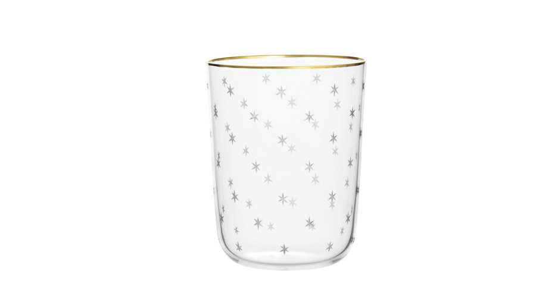
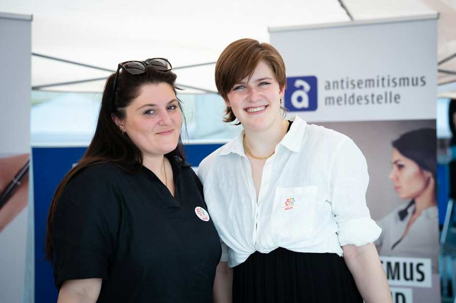
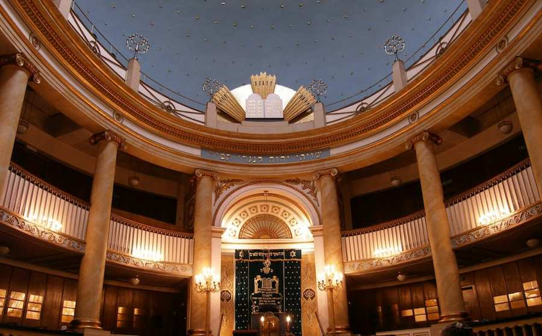
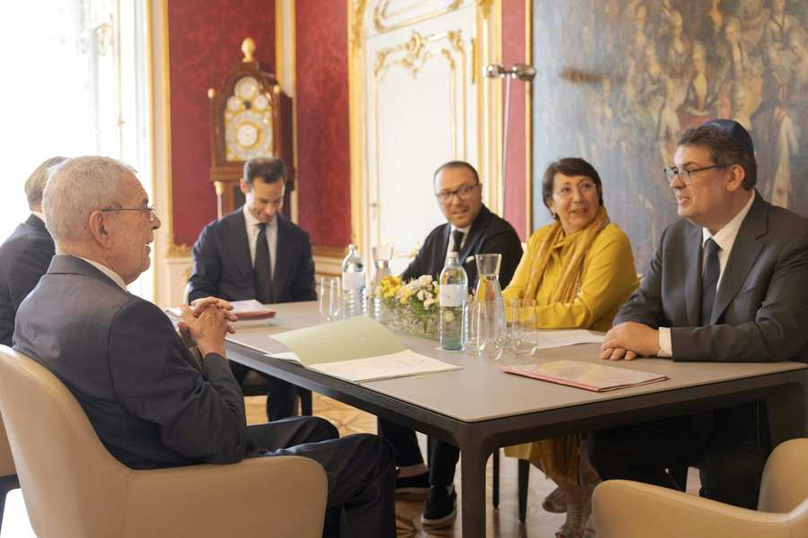

Welcome to the
Jewish Community in Vienna

Visiting the City Temple
The City Temple is the spiritual center of the Jewish community in Vienna and the largest synagogue in Austria. It was the only major Viennese ...

A work of art for the future
At a press event on October 17 at the Vienna City Temple, the official start of the restoration work for Austria’s most significant synagogue w...

Vienna City Temple Cup for the 200th Anniversary
On the occasion of the 200th anniversary of the Vienna City Temple, the traditional Viennese glass manufacturer J. & L. Lobmeyr, in collaborati...

My Experience as an American Intern at the IKG Vienna
Eleanor Monroe is a student at Princeton University studying History and German. (If you wanted to include a short bio)
Vienna's main synagogue: the Stadttempel
The Stadttempel in Vienna is a must-see for anybody curious about the city's rich historical and cultural history. It has played an essential r...

Temple Board Election Results
On June 15th and June 21st, members of Vienna’s Stadttempel were called upon to participate in the elections for the temple board. There were 449 e...

Official Visit to President Alexander Van der Bellen
On June 6th, the newly elected executive board made an official visit to Federal President Alexander Van der Bellen. President Oskar Deutsch, Vic...
Jewish Community unanimously: No cooperation with the FPÖ
The board of directors of the Jewish Community of Vienna, the Kultusvorstand, unanimously reaffirmed its cordon sanitaire towards the Freedom Par...


Projects

LIKRAT
Jewish youth visit schools to answer questions and counteract possible prejudices.
Learn more
Rabbinate
Here you will find the contact to the rabbinate as well as useful information about kosher food and other offers.
Learn more
TMICHA: Social and Charitable Work
The IKG and its members strive to promote the welfare of its members, even in difficult situations.
Learn moreReporting Centre for Antisemitism
Information page on the reporting office for incidents of anti-Semitism.
Learn moreEvents